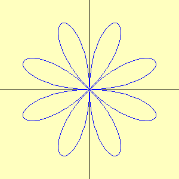
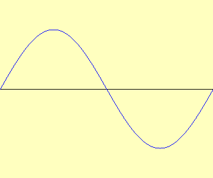

import java.awt.*;
import java.applet.*;
public class Exm2 extends Applet
{
public void paint(Graphics g)
{
int t; //angle (degree)
double tt; //angle (radian)
int x1,y1,x2,y2; //two points
g.setColor(new Color(255, 255, 192)); //back color
g.fillRect(0,0,300,300);
g.setColor(Color.black); //color of axes
g.drawLine(0,150,300,150); //x axis
g.drawLine(150,0,150,300); //y axis
g.setColor(Color.blue); //color of the graph
for(t=0;t<=360;t=t+1){
tt=(double)(t)/180*Math.PI; //degree to radian
x1=(int)(100*Math.cos(3*tt)+150);// point 1
y1=(int)(100*Math.sin(5*tt)+150);
tt=(double)(t+1)/180*Math.PI;
x2=(int)(100*Math.cos(3*tt)+150);// point 2
y2=(int)(100*Math.sin(5*tt)+150);
g.drawLine(x1,y1,x2,y2); //connect 2 points
}
}
}
|
Exm2.html
<HTML> <HEAD> <TITLE>Exm2</TITLE> </HEAD> <BODY> <APPLET CODE="Exm2.class" WIDTH=300 HEIGHT=300></APPLET> </BODY> </HTML> |
(2) Draw the graph of r(t)=sin 4t ( polar coordinates ).

Excercise 2b Draw the graph of y=sin x. Set the width
of the screen to 360 pixcels.
